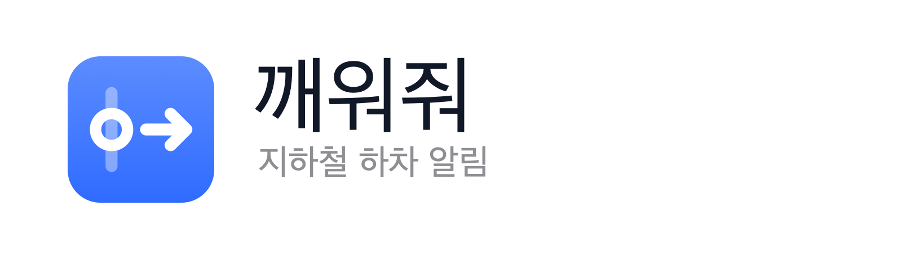

INTEGRATED SPEC & TECH GUIDE v1.2 · iOS FIRST"방송을 못 들어도, 잠이 들어도 — 내릴 역은 놓치지 않게."
정차 감지 · 실시간 열차위치 · Cell ID 센서 퓨전 기반 지하철 하차 알람
PoC/WakeMeLogger)과 점검 스크립트."mnc": 05) 수정, LTE/5G 필드(TAC·ECI·NCI) 반영, 노선 그래프/관측 모델 분리.시간표 추정이 아닌 실제 열차 위치 기반 알림 + 폰을 열지 않는 잠금화면 전광판 + 이어폰·워치로 전달되는 확실한 하차 신호
아래 가설은 기획의 전제입니다. Phase 0(PoC)에서 검증하고, 결과에 따라 제품 정의와 우선순위를 확정합니다.
| # | 가설 | 검증 방법 | 결과에 따른 결정 |
|---|---|---|---|
| H1 | 역을 지나치는 1순위 원인은 몰입·전광판 가림보다 졸음이다 | 출퇴근 승객 설문(n≥200) + 심층 인터뷰 10명 | 졸음이 1순위면 알람형 알림(P2 → P1 상향)과 반복 알림 강화 |
| H2 | 기존 앱의 하차 알림(진동, 약 30초 전으로 관찰)은 ① 지연·급행 시 부정확하고 ② 혼잡·노캔·졸음 상황에서 놓치기 쉽다 | 경쟁 앱과 동일 구간 동시 탑승 테스트 20회 이상 — 알림 발송~문 열림 시간, 진동 인지 여부 기록 | 오차가 작으면 차별점을 정확도가 아닌 리드타임·알림 채널로 집중 |
| H3 | 정차 감지 + 노선 순서만으로 역 판별 정확도 97% 이상이 가능하다 | 아이폰 로거 로그를 정차 마크(정답 라벨)와 대조해 오프라인 분석 | iOS 우선 전략의 핵심 가설. 미달 시 실시간 열차위치 API 비중을 높임 |
| H4 | 지하 구간에서 셀과 역(구간)이 충분히 1:1에 가깝게 대응한다 | Phase 3로 연기. 통신 3사 Android 단말 셀 로그 분석 (광중계기·누설동축 구간 포함) | 식별력이 낮으면 Cell ID는 보정 신호로 한정 |
| H5 | iOS 백그라운드 생존: 백그라운드 위치(.otherNavigation, 자동 일시정지 끔)로 앱을 유지하면 잠금 상태에서도 센서가 끊기지 않고, 배터리는 시간당 5% 이하다 |
아이폰 로거 + check_ride.py (백그라운드 샘플 수집률 ≥ 95%, 1초 넘는 끊김 0건) |
iOS 우선 전략의 Go/No-go. FAIL이면 서버 주도(APNs) 구조로 바꾸거나 Android 우선으로 복귀 |
| 대안 | 하차 알림 | 위치 추정 방식 | 확인할 한계 |
|---|---|---|---|
| 차내 전광판·안내방송 | — | 열차 자체 시스템 | 가림·꺼짐, 노캔 시 미수신, 졸음에 무력 |
| 카카오지하철 | 제공 진동 · 하차 약 30초 전 관찰 |
직접 테스트 필요 (H2) | 30초로 혼잡 시 문까지 이동 가능한지, 진동만으로 인지되는지, 지연·급행 시 정확도 |
| 네이버지도 | 제공 (길찾기 연동) 진동 · 하차 약 30초 전 관찰 |
직접 테스트 필요 (H2) | 동일 + 길찾기를 거쳐야 하는 진입 비용 |
| 스마트폰 기본 알람 | 시간 기반 수동 | 사용자가 직접 계산 | 지연 반영 불가, 매번 설정 |
| 깨워줘 | 핵심 기능 | 센서 퓨전 | 차별점: 문 열림 ≥ 60초 전 알림, 이어폰·워치·반복 알림, 실제 위치 기반, 0~1탭 루틴, 반대 방향 경고 |
※ 기존 앱의 알림 방식(진동, 하차 약 30초 전)은 사용자 관찰(2026-09-11)이며, 앱별 차이와 정확한 시점은 H2 테스트로 확인합니다. 위치 추정 방식은 추정하지 않고 테스트 후 업데이트합니다.
사용자가 가장 먼저 알고 싶은 정보는 "지금 어디"보다 "몇 정거장, 몇 분 남았나"입니다. 예시 경로: 2호선 내선 강남 → 서초.
※ 소요시간·문 방향 등 목업 수치는 예시 데이터입니다.
ProgressStyle: 역 = 진행바 위 포인트).요일·시간대 기반 출퇴근 루틴을 자동 제안합니다. 사용자는 목적지만 입력하고, 출발역은 지하 진입 직전 위치로 자동 추정합니다. 노선·방향(내선/외선, 상행/하행)·급행·지선·환승은 자동 계산합니다. 위젯·단축어(App Intents)로 원탭 시작도 지원합니다.
승강장 대기(WAITING) 중 첫 출발이 감지되면 탑승을 확정합니다. 첫 역 변화가 경로와 반대면 즉시 반대 방향 경고를 보냅니다. 붐벼서 열차를 한 대 보내도 다음 열차로 자연스럽게 이어집니다.
폰을 열지 않고 잠금화면만 봐도 남은 정거장·예상 시간·신뢰도를 확인할 수 있습니다.
준비(2역 전 출발) ➔ 하차(전역 출발, 문 열림 60초 이상 전) ➔ 확인(도착 후 미확인 시 반복). 환승역에도 동일하게 적용합니다.
하차 후 보행이 감지되거나 GPS가 복귀하면 세션을 자동 종료해 배터리를 보호합니다. 지나쳤다면 다음 역에서 되돌아가는 방법을 안내합니다.
도착(문 열림) 시점 알림은 혼잡한 차내에서 문까지 이동할 시간이 없어 너무 늦습니다. 기존 앱은 하차 약 30초 전에 진동으로 알리는 것으로 관찰되는데(3장), 깨워줘는 2차 알림을 문 열림 60초 이상 전으로 잡아 두 배 이상의 여유를 확보합니다. 모든 알림은 문 열림 기준 리드타임으로 정의합니다.
| 단계 | 트리거 | 목표 시점 | 기본 채널 |
|---|---|---|---|
| 1차 준비 | 목적지 2역 전 출발 | 도착 약 3~4분 전 | 짧은 진동 1회 + 이어폰 차임 |
| 2차 하차 | 목적지 전역 출발 | 문 열림 ≥ 60초 전 | 강한 진동 + 이어폰 TTS("다음 역 서초, 내리실 역입니다") + 워치 |
| 3차 확인 | 목적지 정차 감지 후 사용자 미확인 | 정차 즉시, 확인할 때까지 반복 | 알람형 (소리·진동 반복) |
| 경고 | 반대 방향 탑승 / 목적지 지나침 | 감지 즉시 | 강한 진동 + 안내 화면 |
| 채널 | Android | iOS | 비고 |
|---|---|---|---|
| 이어폰 오디오 큐/TTS | AUDIOFOCUS_GAIN_TRANSIENT_MAY_DUCK + TextToSpeech |
앱 실행 중: AVAudioSession 덕킹 / 서버 주도 시: 커스텀 알림 사운드(음성 녹음 파일) | 노캔 사용자 1순위 채널 |
| 폰 진동 | 커스텀 진동 패턴 (채널 생성 시 고정 → 패턴 변경 시 새 채널) | 알림 기본 진동만 가능 (Core Haptics는 포그라운드 전용) | iOS에서 "연속 강한 햅틱"은 불가 |
| 방해금지/집중모드 통과 | 알람 용도 채널(USAGE_ALARM) + DND 예외 온보딩 |
Time Sensitive 알림 | Critical Alert는 Apple 승인 난이도로 제외 |
| 워치 | 알림 미러링 → Wear OS 전용 앱 | 알림 미러링 → watchOS 전용 앱 | 손목 햅틱이 가장 확실한 신호 |
| 알람형 | 전용 알람 화면 (Android 14+ 풀스크린 인텐트 정책 확인) | iOS 26 AlarmKit (Phase 1 적용 · ETA 기반 카운트다운) | 졸음 페르소나용 |
GPS가 닿지 않는 지하 구간은 단일 신호로 해결하지 않습니다. "열차는 정해진 역 순서로 앞으로만 간다"는 강한 제약 위에서 여러 약한 신호를 확률적으로 결합합니다.
| 신호 | Android | iOS | 강점 | 약점 |
|---|---|---|---|---|
| 가속도·자이로 정차 감지 | 가능 | 앱 생존 필요 | DB 불필요, 정차 횟수 = 지나간 역 수 | 터널 내 신호대기 정차, 사용자 움직임 노이즈 |
| 실시간 열차위치 API 서울 열린데이터광장 |
가능 | 서버 경유 | 지연·급행 반영, 인프라 비용 낮음 | 탑승 열차 식별 필요, 갱신 지연·누락 |
| 역간 소요시간 모델 | 가능 | 가능 | 항상 가용 (폴백·사전확률) | 지연 시 오차 |
| Cell ID 서빙 + 이웃 셀 |
가능 | 불가 | 절대 위치 단서 | 통신사별 DB, 셀 ≠ 역, 화면 꺼짐 시 갱신 억제 |
| 역사 Wi-Fi BSSID | 백그라운드 30분 1회 스캔 | 불가 | 역사 AP는 정확 | MVP 제외. 차내 Wi-Fi는 열차와 함께 이동하므로 사용 금지 |
iOS — 온디바이스 추론 (Phase 1 · 백그라운드 위치로 앱을 유지하고, 이동 중 위치를 서버로 보내지 않음)
[CoreLocation 백그라운드 위치] ── 앱 생존 유지 (.otherNavigation · 자동 일시정지 끔) [CoreMotion 가속도·기압] ─────┐ [실시간 열차위치 API] ────────┼──▶ [HMM 위치 추론] ──▶ [상태머신] ──▶ Live Activity 로컬 업데이트 [역간 소요시간 분포] ─────────┤ (Swift Package) + Time Sensitive 알림 · AlarmKit [노선 그래프 번들] ───────────┘
iOS — 공개 출시 (Phase 2 · API 키 보호와 호출 한도 관리를 위한 서버 프록시)
[서버] 노선 단위로 실시간 열차위치 폴링 · 캐싱 ──▶ [앱] 탑승 노선만 구독 (H5 FAIL 시 대안) [서버] 탑승 열차 매칭 ──▶ APNs ──▶ Live Activity 원격 업데이트
Android — 온디바이스 추론 (Phase 3 · 엔진 포팅 + Cell ID 보정)
[가속도·자이로] ──────────┐ [서빙+이웃 셀 관측] ───────┼──▶ [HMM 위치 추론] ──▶ [상태머신] ──▶ 알림 · 진행 알림 UI [역간 소요시간 분포] ──────┤ [노선 그래프·관측 모델] ───┘
IDLE ──[목적지 설정]──▶ WAITING (승강장 대기) WAITING ──[첫 출발 감지]──▶ TRACKING (구간 i) TRACKING ──[진행 방향 ≠ 경로]──▶ WRONG_DIRECTION ⚠ 즉시 경고 + 경로 재계산 TRACKING ──[목적지 2역 전 출발]──▶ PREPARE 🔔 1차 준비 PREPARE ──[목적지 전역 출발]──▶ ALIGHT_NOW 🔔🔔 2차 하차 (문 열림 ≥ 60초 전) ALIGHT_NOW ──[목적지 정차 감지]──▶ ARRIVED 🔔🔔🔔 3차 확인 (미확인 시 반복) ARRIVED ──[보행 감지 / GPS 복귀]──▶ COMPLETED 세션 자동 종료 ARRIVED ──[미하차 상태로 재출발]──▶ MISSED ⚠ 되돌아가기 안내 * 모든 추적 상태 ──[근거 부족]──▶ UNCERTAIN (시간 모델 폴백 · 알림 앞당김) * 환승 경로: 환승역 ARRIVED ──▶ 다음 구간 WAITING 자동 연결 * 최대 세션 시간 초과 시 강제 종료
① 노선 그래프 — 공공 역코드 기반 정적 데이터. 앱 번들에 넣고 버전으로 관리합니다. (값은 예시)
{
"graph_version": "2026.09.1",
"line_id": "L2",
"direction": "INNER",
"stations": {
"222": { "name": "강남", "transfer": [] },
"223": { "name": "교대", "transfer": ["L3"] },
"224": { "name": "서초", "transfer": [] }
},
"segments": [
{
"seg_id": "L2-IN-222-223",
"from": "222",
"to": "223",
"run_sec": { "p50": 90, "p90": 120 },
"dwell_sec_p50": 30,
"door_side_at_to": "TBD"
}
]
}
② 관측 모델 — 크라우드소싱으로 갱신하는 P(셀 관측 | 구간). 통신사·RAT별로 분리합니다. (값은 예시)
{
"plmn": "45005",
"rat": "LTE",
"tac": 10234,
"eci": 8921341,
"pci": 211,
"earfcn": 1350,
"neighbors": [ { "pci": 87, "earfcn": 1350 } ],
"seg_id": "L2-IN-222-223",
"phase": "DWELL",
"p": 0.82,
"n_obs": 431,
"last_seen": "2026-09-01"
}
"mnc": 05는 유효한 JSON이 아닙니다.Long). v1.0의 LAC는 2G/3G 개념입니다.DWELL(정차) / RUN(주행). 셀 경계는 역 경계와 일치하지 않을 수 있습니다.| 제약 | 영향 | 대응 |
|---|---|---|
| iOS 잠금 시 앱 정지 | 센서 수집·위치 판정 중단 | 백그라운드 위치(.otherNavigation, pausesLocationUpdatesAutomatically = false)로 앱 유지 — H5로 최우선 검증 |
| iOS Cell ID 비공개 | iOS 셀 추적 불가 | 정차 감지 + 시간 모델 + 실시간 API (Cell ID는 Android 확장 때) |
| iOS 백그라운드 햅틱 불가 | 연속 강한 진동 불가 | Time Sensitive 알림, 이어폰 오디오, 워치, AlarmKit 검토 |
| iOS 위젯 갱신 예산 | 실시간 위젯 불가 | ActivityKit Live Activity. 위젯은 시작 버튼 용도 |
| Android 백그라운드 위치 권한 심사 | Play 심사 부담, 사용자 거부 | [출발] 탭 시 foregroundServiceType="location" FGS 시작 → 사용 중 권한만으로 동작 |
| Android 화면 꺼짐 시 셀 갱신 억제 | 셀 이벤트 누락, 캐시값 반환 | requestCellInfoUpdate() 주기 폴링, 기기별 실측 |
| Android 위젯 → FGS 시작 제약 | 위젯 원탭 시작 실패 가능 | 백그라운드 시작 예외 조건 검증, 실패 시 앱 열기로 폴백 |
| 제조사 절전 (삼성 앱 절전 등) | 서비스 강제 종료 | 절전 예외 온보딩, 비정상 종료 감지 시 복구 알림 |
| 우선순위 | 기능 | 명세 | iOS (Phase 1) | Android (Phase 3) |
|---|---|---|---|---|
| P0 | 위치 판정 엔진 | 정차 감지 + 노선 순서 + 시간 모델 HMM, 온디바이스 | CoreMotion + 백그라운드 위치 유지, Swift Package 엔진 | SensorManager, location FGS (엔진 포팅) |
| P0 | 실시간 열차 매칭 | 실시간 열차위치와 출발 감지를 대조해 탑승 열차 확정 | 앱이 API 직접 호출 (세션 중 탑승 노선만) → 공개 출시 시 서버 프록시 | 보조 신호 |
| P0 | 경로 설정 | 루틴 즐겨찾기, 출발역 자동 추정, 방향·급행·지선 자동 판별 | CoreLocation, App Intents (액션 버튼·단축어) | FusedLocationProvider |
| P0 | 하차 알림 | 3단계 알림 + 반대 방향 경고 + 지나침 안내 | Time Sensitive 알림 + 커스텀 사운드 | 알람 채널, 커스텀 진동 패턴 |
| P0 | 잠금화면 전광판 | 남은 정거장·ETA·신뢰도 진행 표시 | ActivityKit Live Activity (로컬 업데이트, APNs 불필요) | FGS 진행 알림 (Android 16+ Live Updates) |
| P0 | 세션 자동 종료 | 보행 감지·GPS 복귀·최대 시간 초과 시 종료 | CMMotionActivity | Activity Recognition API |
| P1 | 알람형 알림 | 해제할 때까지 울리는 알람 (졸음 페르소나) | AlarmKit (iOS 26) | 전용 알람 화면 (풀스크린 인텐트 정책 확인) |
| P1 | 이어폰 오디오 알림 | 차임·TTS를 이어폰으로 재생 (음악 덕킹) | 커스텀 알림 사운드 / AVAudioSession | AudioFocus + TextToSpeech |
| P1 | 환승 연결 | 환승역 하차 알림 후 다음 구간 자동 이어가기 | 공통 로직 (엔진) | |
| P1 | 워치 알림 | 손목 햅틱 하차 신호 | 알림 미러링 → watchOS 앱 | 알림 미러링 → Wear OS 앱 |
| P1 | 하차 편의 정보 | 내리는 문 방향, 빠른 하차·환승 칸 | 데이터 출처·라이선스 확인 필요 | |
| P2 | Cell ID 보정 | 서빙+이웃 셀 관측으로 위치 확률 보정 | 미지원 (공개 API 없음) | 핵심 보정 신호 (requestCellInfoUpdate) |
| P2 | 크라우드 자동 라벨링 | 세션 종료 후 자동 시퀀스 라벨 업로드 + 백엔드 집계 | 정차·소요시간 통계만 | 셀 관측 포함 |
| 구분 | 지표 | 정의 | 초기 목표 |
|---|---|---|---|
| North Star | 적시 알림 성공률 | 2차 알림이 문 열림 60초 이상 전에 발송되고, 사용자가 목적지에서 하차한 세션 비율 | ≥ 95% |
| 정확도 | 역 판별 정확도 | 정차 이벤트별 역 추정 정답률 (PoC 정답 라벨 기준) | ≥ 97% |
| 정확도 | 미탐률 | 알림 없이 목적지를 지나친 세션 비율 | ≤ 1% |
| 정확도 | 조기 오탐률 | 2차 알림이 2정거장 이상 일찍 발송된 세션 비율 | ≤ 5% |
| 타이밍 | 2차 알림 리드타임 | 알림 발송 ~ 문 열림 시간 분포 | p10 ≥ 60초, p90 ≤ 180초 |
| 리소스 | 배터리 소모 | 1시간 세션 기준 배터리 감소량 | ≤ 5% (PoC 실측 후 확정) |
| 사용성 | 루틴 시작 비율 | 전체 세션 중 루틴·원탭으로 시작된 비율 | ≥ 60% |
| 리텐션 | 출퇴근 W4 리텐션 | 가입 4주차에 주 3회 이상 사용한 유저 비율 | TBD (베타 후 설정) |
※ 목표치는 가설이며, Phase 0 PoC와 클로즈드 베타 결과로 확정합니다. v1.0의 "초저전력" 표현은 측정 가능한 배터리 목표로 대체했습니다.
| 리스크 | 가능성 | 영향 | 대응 |
|---|---|---|---|
| iOS 백그라운드 생존 실패 (잠금 시 앱 정지·센서 끊김) | 중 | 매우 높음 | Phase 0에서 최우선 검증(H5). 실패 시 서버 주도(APNs) 구조로 전환하거나 Android 우선으로 복귀 |
| 미탐으로 인한 신뢰 붕괴 | 중 | 매우 높음 | 불확실 시 알림 앞당김, 3차 반복 알림, 다중 채널 |
| App Review — 백그라운드 위치 목적 외 사용 판정 | 중 | 높음 | .otherNavigation, 파란 위치 표시기, 사용 목적 명시, 사용 중 권한만 요청 |
| 위치정보법 규제 | 중 | 높음 | 출시 전 법률 검토, 온디바이스 추론, 업로드 비식별화 |
| 경쟁 앱과 차별화 실패 (iOS엔 Cell ID 차별점 없음) | 중 | 높음 | 리드타임(≥ 60초)·알림 채널(이어폰·워치·알람)로 차별화, H2 비교 측정 |
| 정차 감지 오탐 (터널 내 신호대기, 손에 든 폰의 움직임) | 중 | 중 | 최소 정차시간 조건, 소요시간 사전확률, 실시간 API 증거 결합 |
| 실시간 API 지연·호출 한도 | 중 | 중 | 개인 MVP는 세션 중 탑승 노선만 호출, 공개 출시 시 서버 캐싱. 단독 판정에 쓰지 않음 |
| 셀과 역이 1:1로 대응하지 않음 (Android) | 높음 | 낮음 (Phase 3 한정) | Cell ID를 보정 신호로 격하, Phase 3에서 검증 (H4) |
| 통신사 셀 재배치로 관측 모델 부패 (Android) | 중 | 낮음 | last_seen 감쇠, 자동 라벨링으로 지속 갱신 |
로거 앱(PoC/WakeMeLogger)으로 출퇴근길을 기록합니다. 정차 순간 액션 버튼을 눌러 남긴 마크가 정답 라벨입니다. check_ride.py로 H5(백그라운드 생존·배터리)를 판정하고, 정차 감지 정확도(H3)를 분석하며, 경쟁 앱 동시 테스트(H2)와 설문(H1)도 진행합니다.
Go 기준: H5 PASS, 역 판별 ≥ 97%, 2차 알림 리드타임 p10 ≥ 60초.
Swift Package 엔진, Live Activity 전광판, 3단계 알림(Time Sensitive·AlarmKit), 루틴·액션 버튼 시작을 구현합니다. 서버 없이 앱이 실시간 API를 직접 호출합니다. 본인이 매일 쓰고, 이후 지인에게 TestFlight로 배포합니다.
서버 프록시(API 키 보호·호출 한도), App Review 대응, 이어폰 오디오·워치·환승 연결(P1)을 추가합니다.
골든 라이드로 결과가 같은지 검증하며 엔진을 포팅하고, Cell ID 보정과 H4를 검증합니다. 크라우드 자동 라벨링을 켜고 수도권 전 노선으로 확장합니다.
기술스택은 기획서의 제약에서 거꾸로 정합니다. 이 앱은 화면이 적고, 가치는 백그라운드와 시스템 화면(Live Activity·알림·액션 버튼)에서 나오므로 네이티브로 갑니다. Flutter·React Native는 핵심 기능이 전부 네이티브 모듈이 되어, 네이티브 위에 한 겹을 더 얹는 셈이 됩니다.
| 기획서 요구사항 | 기술적 함의 | 결정 |
|---|---|---|
| 잠금 상태 생존·센서 수집 | OS API를 직접 다루고, 문제가 생기면 직접 디버깅 | 네이티브 Swift |
| Live Activity·AlarmKit·App Intents | SwiftUI로만 구현 가능 | SwiftUI |
| 판정 엔진이 제품의 핵심 | OS와 분리해 로그 재생으로 테스트 | Swift Package (Foundation만 의존) |
| 개인 MVP는 서버 없이 | 앱이 공공 API를 직접 호출, Live Activity 로컬 업데이트 | 서버는 Phase 2 |
| Android는 나중에 | 포팅해도 결과가 같다는 보장 필요 | 골든 라이드 (언어 중립 JSONL + 기대 결과) |
| Phase | 앱 | 서버·인프라 | 데이터·도구 |
|---|---|---|---|
| 0 · PoC | 아이폰 로거: SwiftUI, CoreMotion, CoreLocation, App Intents | 없음 | Python: check_ride.py → Jupyter·pandas·numpy |
| 1 · iOS MVP | Swift 6 + SwiftUI (최소 iOS 26), ActivityKit + WidgetKit, AlarmKit, UserNotifications, App Intents, SwiftData, URLSession | 없음 (노선 그래프는 앱 번들) | 골든 라이드 재생 테스트 (Swift Testing), CI |
| 2 · 공개 출시 | 최소 iOS 17로 낮출지 검토 (Live Activity 버튼은 iOS 17+) | 서버 프록시 + Redis 캐시, 필요 시 APNs. 언어는 이때 결정 (Vapor면 엔진 공유 가능) | 크래시·지표 수집 (역 ID는 보내지 않음) |
| 3 · Android | Kotlin + Jetpack Compose, 엔진 포팅 (필요 시 KMP 전환 검토), minSdk 29 | 크라우드 집계 API | 관측 모델 번들 재빌드 배치 |
WakeMe/
index.html 기획서
PoC/WakeMeLogger/ Phase 0 아이폰 로거 (xcodegen: project.yml)
PoC/analysis/ check_ride.py — H5 판정·그래프
tools/build_network.py 공공데이터 → 노선 데이터 생성
순서는 국토부 순번, 속성은 표준데이터, 소요시간은 서울교통공사 실측(1~8호선)
App/ SwiftUI 앱 + Live Activity 확장 (구현됨 · 시간 모델 기반)
Engine/ Swift Package — 노선·경로·알림 시점·추적기 (구현됨 · HMM은 PoC 후)
GoldenRides/ (Phase 1) 탑승 로그 JSONL + 기대 결과